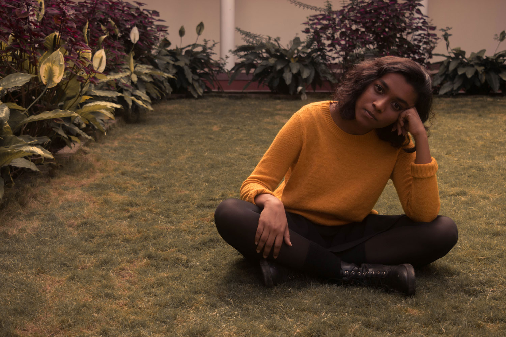
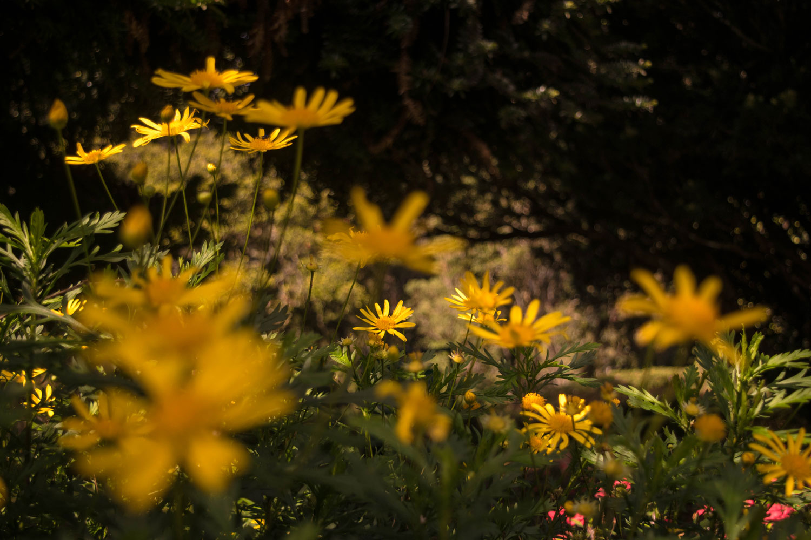
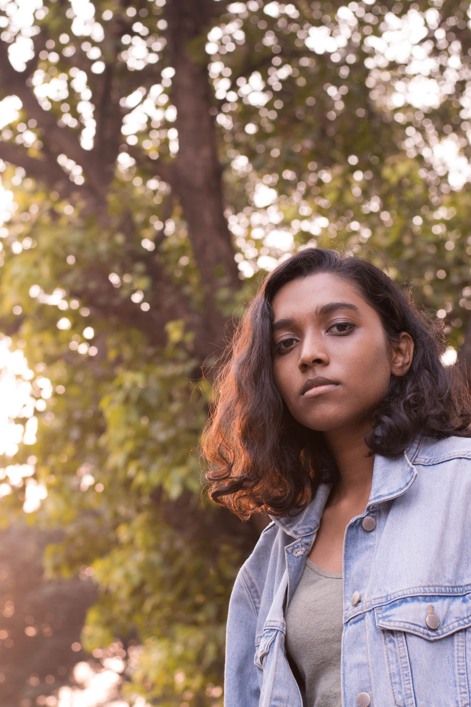
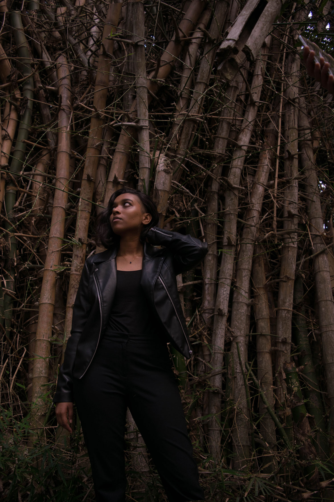
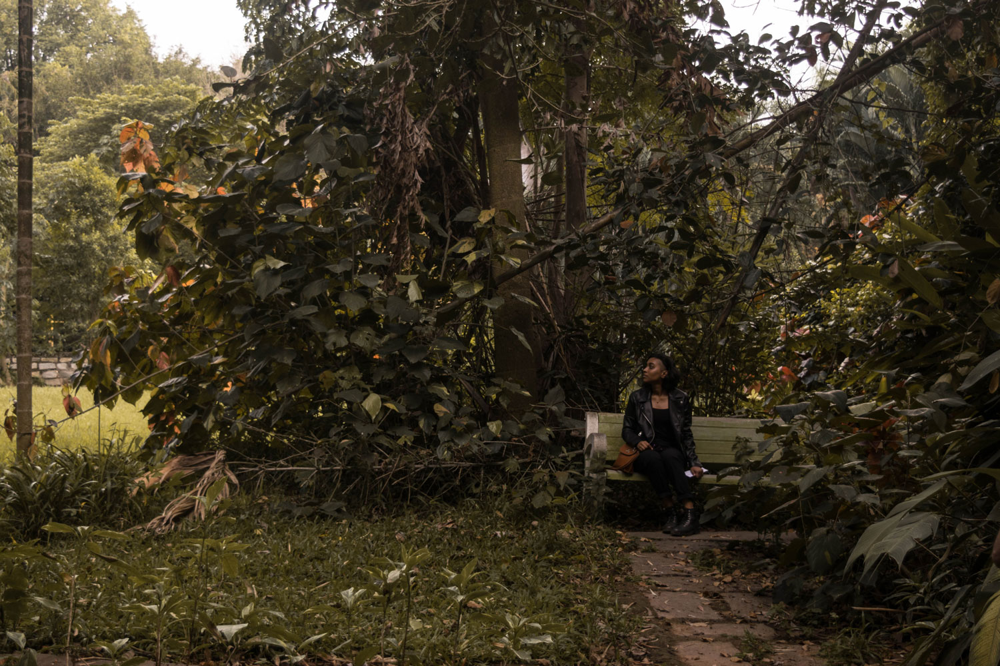
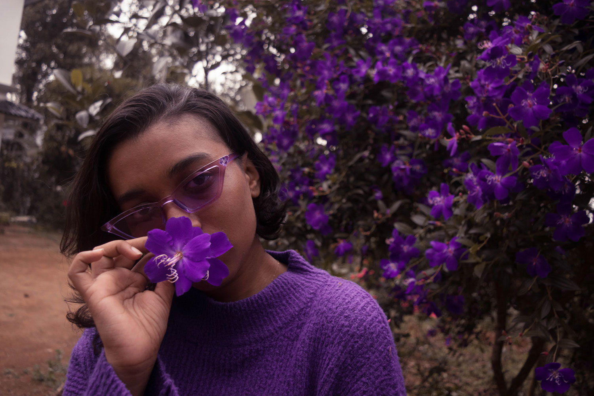
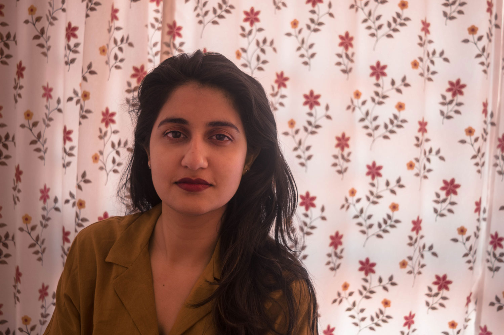
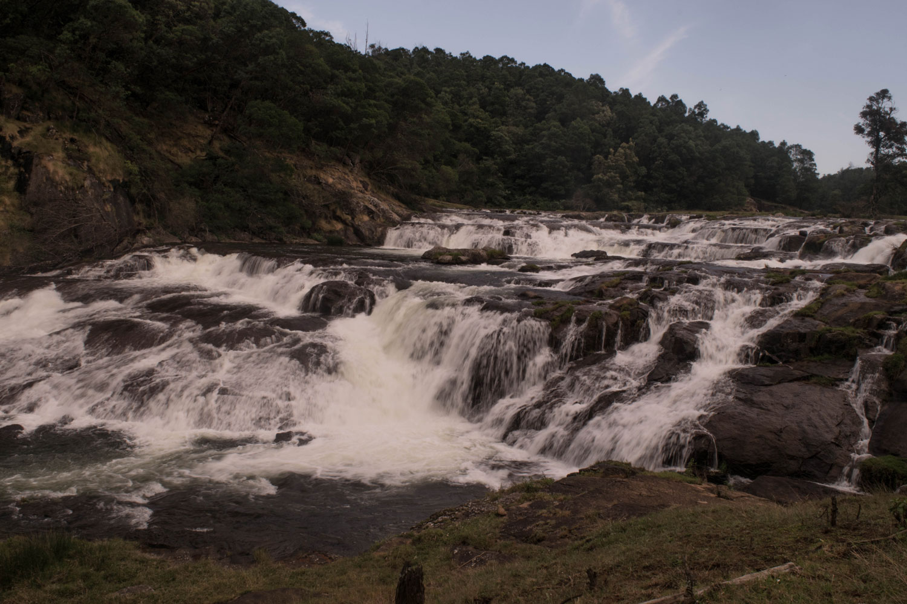
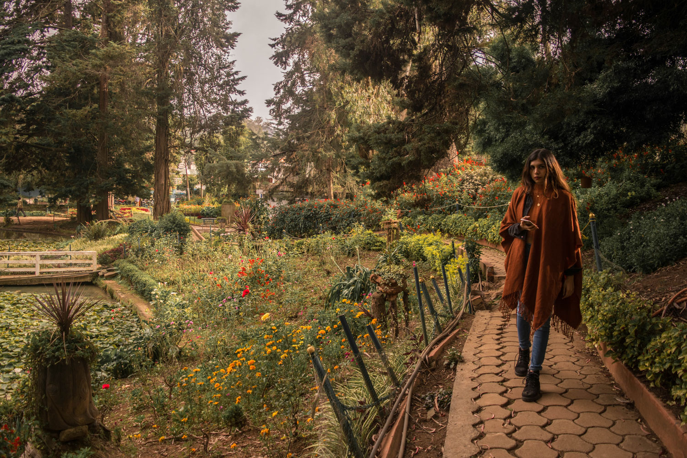

Photography
I picked up photography as a hobby in 2017. Over time I have realised my favourite subjects to photograph are nature, because I find it awe inspiring, and people around me because I find their expressions and body languageS interesting. I like to have earthy aesthetic in my pictures and find the photo editing process therapeutic. I use a Nikon D5300 and edit using Lightroom and Photoshop.











